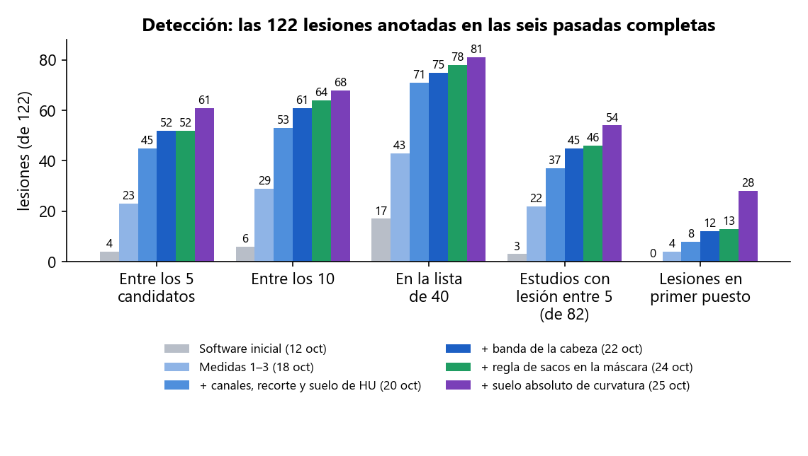
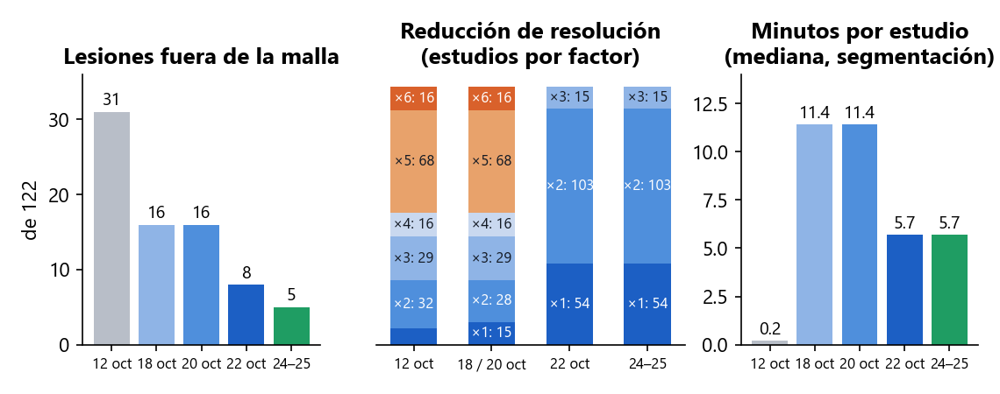
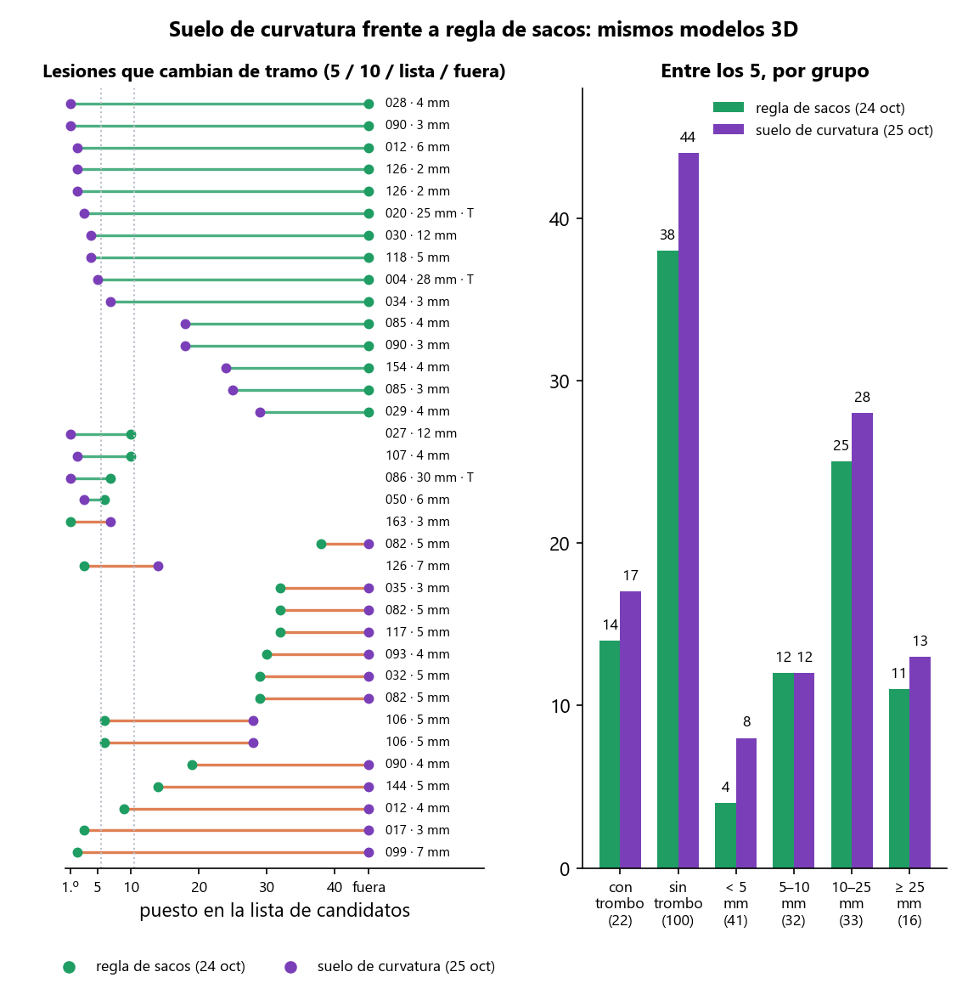
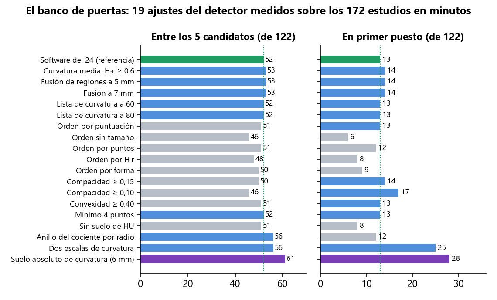
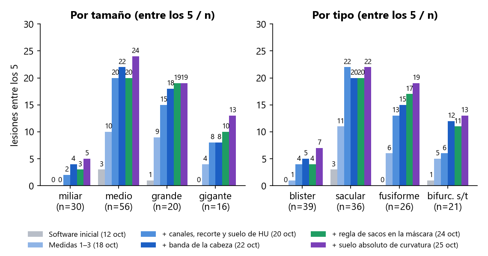
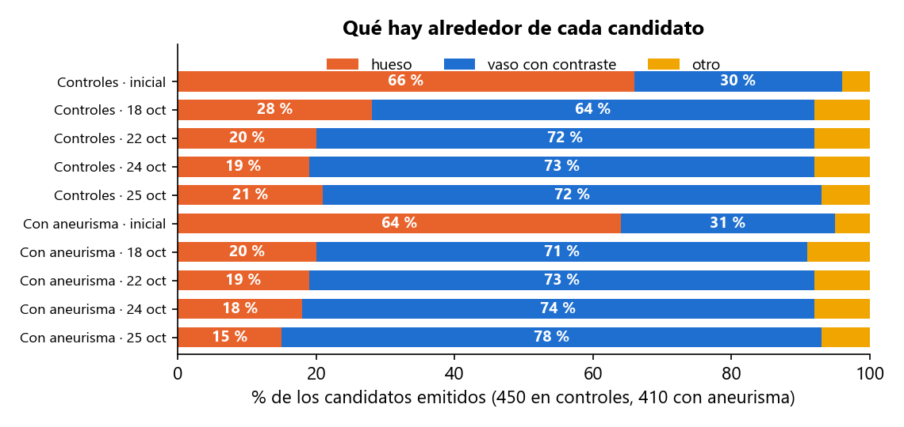
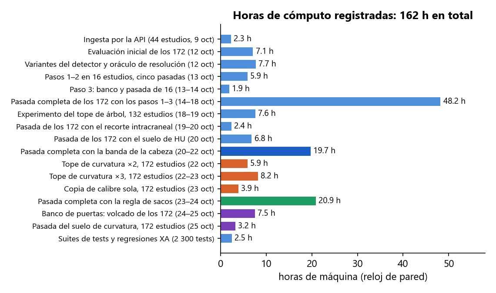

En dos semanas y media se ha incorporado el primer dataset público con verdad de terreno (172 angio-TC de cabeza con 122 aneurismas segmentados a mano), se ha medido el detector de Prospective sobre él nueve veces de principio a fin y, entre pasada y pasada, se han identificado y corregido las causas del fallo una a una, separando siempre lo que falla en la segmentación (la lesión no llega al modelo 3D) de lo que falla en la detección (está en el modelo y el detector no la coloca). Lo nuevo del 25 de octubre es un banco que mide en minutos cualquier ajuste del detector sobre los 172 estudios sin volver a segmentar: con él se han probado 20 ajustes en una mañana. Diecinueve no mueven la cifra en ningún sentido; uno la mueve mucho: el detector buscaba «el 15 % más curvado de cada modelo», un umbral relativo que en una cabeza entera señalaba parches minúsculos, y ahora busca «lo que está curvado como una esfera de 6 mm o menos», un umbral absoluto con significado anatómico. Con ese cambio, confirmado con una pasada real de detección sobre los 172 estudios, las lesiones entre los 5 candidatos pasan de 52 a 61, las que salen en primer puesto de 13 a 28 y los pacientes con su lesión entre los 5 de 46 a 54 de 82. Dieciséis lesiones pequeñas bajan de puesto, y se sabe por qué.
| Fecha | Trabajo | Resultado | Estado |
|---|---|---|---|
| 8 oct | Auditoría de seguridad de la API y el acceso; búsqueda de datasets DICOM con verdad de terreno | 7 hallazgos corregidos el mismo día. Elegido Zenodo 15697196 (CC-BY): el único con DICOM + segmentación manual del aneurisma | hecho |
| 9 oct | Ingesta de 44 estudios por la API, como un usuario, y banco de medida del detector | Primer dato real: 2 aciertos de 34 aneurismas en angio-TC | hecho |
| 12 oct | Evaluación de los 172 estudios con el software tal cual, ajustes del detector y un oráculo de resolución | 4 de 122 lesiones entre los 5; 31 fuera del modelo; tres causas medidas | hecho |
| 13 – 14 oct | Medidas 0 – 3: red de seguridad 3DRA, resolución nativa donde importa, hueso fuera de la máscara en TC, detector sobre la malla limpia | Diseñadas y medidas sobre 16 estudios; 3DRA sin cambios | hecho |
| 14 – 18 oct | Primera pasada completa de los 172 con las medidas 1 – 3 (48 h de máquina) | 23 de 122 entre los 5; 16 fuera del modelo; dos poblaciones de estudios identificadas | hecho |
| 18 – 19 oct | Canales de grosor en los 132 estudios de cabeza y cuello (7,6 h); criterio absoluto en controles | Entre los 5 de 5 a 13 en esos estudios; regla cambiada. El criterio absoluto se midió y no existe | hecho |
| 19 – 20 oct | Recorte a la región intracraneal antes de detectar; suelo de densidad; dos pasadas de detección de los 172 sobre las mallas guardadas | 44 y después 45 de 122 entre los 5, 8 en primer puesto, ninguna lesión baja | hecho |
| 20 – 22 oct | Banda de la cabeza antes de segmentar; cuarta pasada completa de los 172 desde el DICOM (19,7 h); fusión con los 321 cambios del compañero y publicación en master | 52 de 122 entre los 5, 12 en primer puesto, 45 de 82 estudios, 8 fuera del modelo, 5,7 min por estudio | hecho |
| 22 – 23 oct | Experimento del tope de curvatura (×2 y ×3, 14 h) y la pieza del calibre sola (3,9 h), sobre las mallas guardadas | 44, 46 y 51 de 122 entre los 5, frente a 52. Reparten grandes ↔ pequeños. No se adoptan | descartado |
| 23 – 24 oct | Regla de sacos en la máscara vascular, con tests, y quinta pasada completa de los 172 desde el DICOM (20,9 h) | Fuera del modelo 8 → 5; 52 entre los 5, 13 en primer puesto, 78 en la lista, 46 de 82 estudios. Entra | hecho |
| 24 oct | La puerta de curvatura media, lesión a lesión, y prueba de bajarla en 3 estudios | No retiene a ninguna lesión: las que pasan mueren en el tope o en la fusión. No se toca | descartado |
| 24 – 25 oct | Banco de puertas: un volcado único de todas las regiones candidatas de los 172 modelos guardados (7,5 h de máquina, de noche) y evaluación de 20 ajustes del detector en 25 min | El banco reproduce los 122 puestos de la pasada del 24. 19 ajustes no mueven la cifra o la bajan; el suelo absoluto de curvatura la sube: 52 → 61 entre los 5, 13 → 28 en primer puesto | hecho |
| 25 oct | Pasada real de detección de los 172 con el suelo absoluto de curvatura, sobre los modelos del 24 (3,2 h) | 61 de 122 entre los 5, 28 en primer puesto, 68 entre los 10, 81 en la lista, 54 de 82 estudios. Coincide con el banco lesión a lesión. Entra | hecho |
| en marcha | Barrido del suelo: esferas de 5 y 7 mm además de la de 6, con el mismo banco | Dice si 6 mm es el óptimo o solo el primer valor probado; se mide en minutos cuando termine el volcado (unas 5 h de máquina) | en marcha |
| pendiente | Comprobación de la pantalla con un estudio del dataset | Requiere entrar en la aplicación; la lógica es la misma función en la API y en el banco, cubierta por tests | pendiente |
Zenodo 15697196: 172 angio-TC de cabeza (145 de ellas incluyen el cuello), 82 con aneurisma y 90 controles, con cada aneurisma segmentado a mano en un fichero STL. Son 122 lesiones: la mitad miden 5 mm o menos, 39 son «blister» de 1,3 – 3,6 mm, 16 son gigantes, 20 están calcificadas y 22 trombosadas. Es un conjunto difícil a propósito, y es el tipo de examen (TC de cabeza entera, con el hueso tocando los vasos con contraste) para el que Prospective no se había medido nunca: su detector se había calibrado sobre dos casos de angiografía rotacional 3D (3DRA), donde no hay hueso.
Dos medidas distintas, siempre separadas. Segmentación: la lesión «llega al modelo» si más de la mitad de la superficie que el radiólogo dibujó está a menos de 1 mm del modelo 3D que Prospective construye; si no llega, el detector no puede verla. Detección: la lesión cuenta como detectada si uno de los candidatos que la aplicación enseña está a menos de 5 mm o de su diámetro. «Entre los 5» es la lista que ve el clínico; «entre los 40» es la lista larga del banco, que dice si la lesión existe para el detector aunque quede atrás. Una medida entra en el código solo si, medida sobre los 172, no baja la segmentación ni la detección en ningún grupo que importe. La medida de hoy no toca la segmentación: los modelos 3D son exactamente los del 24.
| # | Medida | Qué hace | Segmentación (antes → después) | Detección (antes → después) |
|---|---|---|---|---|
| 0 | Red de seguridad 3DRA (13 oct) | Regresión automática sobre los dos casos de referencia de 3DRA, ejecutada tras cada cambio. | Sin cambios en 3DRA tras cada medida. | Lesión en el primer puesto en ambos, tras cada medida. |
| 1 | Resolución nativa donde importa (13 oct) | La pasada reducida localiza el árbol; se vuelve a segmentar a la resolución del DICOM en una banda de 5 mm alrededor, por baldosas. | Fuera del modelo: 31 → 16. Coste: 10 s → 11 min por estudio. | Con 2 y 3: entre los 5, 4 → 23; en la lista de 40, 17 → 43. |
| 2 | Hueso fuera de la máscara en TC (13 oct) | Lo que supera 700 HU se quita antes de rellenar, con 1,5 mm de margen. En 3DRA no se aplica. | Pieza mayor del modelo: 760 → 196 cm³. Coste conocido: una pared calcificada pegada al cráneo se va con él. | Candidatos sobre hueso: 560 → 206 de 860; en controles, 66 % → 28 %. |
| 3 | El detector sobre la malla limpia (14 oct) | Regla absoluta de curvatura media en lugar del percentil y «la región convexa más grande primero». | — | Más lesiones entre los 5 y los 10 sin aumentar el hueso; seis variantes descartadas tras medirlas. |
| 4 | Canales de grosor también en cabeza y cuello (19 oct) | Los dos canales que miden el calibre del vaso solo corrían en mallas «árbol» pequeñas; ahora, siempre que la pieza mayor mida más de 20 mm. | — | Entre los 5: 23 → 31; en la lista, 43 → 52. Hueso en controles: 112 → 79 de 415. |
| 5 | Recorte a la región intracraneal (20 oct) | Las 122 lesiones están a menos de 121 mm del techo del modelo; los candidatos de los controles, a 284 mm. El modelo se queda con sus 140 mm altos antes de detectar. | — (el modelo no cambia; el detector mira solo la cabeza) | Entre los 5: 31 → 44; ganan 17, pierden 4. Detección 3 veces más rápida. |
| 6 | Suelo de densidad (20 oct) | Un candidato en aire o en partes blandas sin contraste (por debajo de −100 HU de media o de 200 de máximo) no es un aneurisma; se quita antes de elegir los 5. | — | Entre los 5: 44 → 45; primer puesto 6 → 8; ninguna lesión baja. 1 148 candidatos quitados de 7 647. |
| 7 | Banda de la cabeza antes de segmentar (20 – 22 oct) | 145 estudios son de cabeza y cuello (350 mm de alto) y se segmentaban reducidos por 2 a 6 por falta de memoria. Las 122 lesiones están a 54 – 120 mm bajo el cráneo: se segmentan solo los 150 mm bajo el techo del cráneo. | Fuera del modelo: 16 → 8 (recupera 11, pierde 3). Reducción: 68 estudios a ×5 y 16 a ×6 → ninguno por encima de ×3; 54 a nativo. 11,4 → 5,7 min por estudio. | Entre los 5: 45 → 52; entre los 10, 53 → 61; primer puesto 8 → 12; estudios 37 → 45 de 82. Suben 30 lesiones, bajan 22. |
| 8 | Tope de la copia de curvatura ×2 y ×3 (22 – 23 oct) no adoptada | El detector calcula la curvatura sobre una copia del modelo diezmada a 80 000 vértices. Se probó con 160 000 y con 240 000 sobre los mismos modelos del 22. | — (mismos modelos) | Entre los 5: 52 → 44 (×2) y 52 → 46 (×3); en la lista, 75 → 67 y 69. Gana 1 en ≥ 25 mm; pierde de 5 a 7 de menos de 10 mm. Detección 44 → 104 y 146 s por estudio. |
| 9 | La pieza del calibre, sola (23 oct) no adoptada | La pieza que mide el calibre del vaso, sola, sobre el modelo completo, con el detalle de curvatura intacto. | — (mismos modelos) | Entre los 5: 52 → 51; lista y top 10 iguales; estudios 45 → 46. Entran 3 grandes y trombosados, salen 4 pequeños y medianos. |
| 10 | Regla de sacos en la máscara vascular (23 – 24 oct) adoptada | Un aneurisma es una bola, no un tubo. Las bolas de 11 mm o más que están a 5 mm del árbol y no son hueso se pegan al modelo. | Fuera del modelo: 8 → 5. Entran 026 (50 mm, gigante: 2 → 91 % de su superficie), 121 (23 mm, trombo: 1 → 100 %) y 024 (20 mm, trombo: 33 → 74 %); ninguna lesión pierde cobertura. +6 % de tiempo. | Entre los 5: 52 → 52; entre los 10, 61 → 64; lista 75 → 78; primer puesto 12 → 13; estudios 45 → 46. Controles iguales: 90 de 90 con 5. |
| 11 | Las puertas del detector, una a una (24 – 25 oct) ninguna adoptada | Diecinueve ajustes de las reglas que aceptan o descartan una región y la ordenan: curvatura media a 0,6, fusión de regiones a 5 y 7 mm, lista de curvatura a 60 y 80, cinco órdenes distintos, compacidad a 0,15 y 0,10, convexidad a 0,40, mínimo de 4 puntos, sin suelo de densidad, anillo del cociente por radio, dos escalas de curvatura. Medidos sobre los 172 en el banco (minutos cada uno). | — (mismos modelos del 24) | Entre los 5: 52 → entre 46 y 56. Los seis que suben lo hacen por una lesión (la 020, 25 mm con trombo) o reparten; los órdenes alternativos y la compacidad baja pierden de 2 a 6. Las dos escalas de curvatura (56, y 25 en primer puesto) señalan el camino de la medida 12. |
| 12 | Suelo absoluto de curvatura (25 oct) adoptada | El detector forma sus regiones candidatas con «el 15 % más curvado de cada modelo»: un umbral relativo que, en una cabeza entera llena de vasos finos, dejaba en los sacos de 10 – 30 mm un parche de 10 – 40 puntos y 7 mm², no el saco. Ahora el umbral es absoluto: todo lo curvado como una esfera de 6 mm o menos forma región. En esos sacos la región pasa a ser el saco entero (100 – 500 puntos, 50 – 200 mm², a 0,3 mm de la lesión) y los tres canales del detector coinciden en él. | — (mismos modelos del 24; el modelo no cambia) | Entre los 5: 52 → 61; entre los 10, 64 → 68; lista 78 → 81; primer puesto 13 → 28; estudios 46 → 54 de 82. Ganan 15 lesiones (entran en la lista) y otras 14 suben al primer puesto; bajan 16, casi todas de 3 – 7 mm, 4 de ellas fuera de los 5. Con trombo entre los 5: 14 → 17; ≥ 25 mm: 11 → 13. Controles 90 de 90 con 5 (hueso 94 de 450, era 86). Detección 52 s por estudio (era 57). |
Herramientas que quedan: evaluación de los 172 fuera del servidor por el mismo camino que la API (reanudable, con lista larga y traza por región), banco del detector, banco de puertas (volcado único de todas las regiones de los 172 modelos y evaluación de cualquier ajuste en un minuto, comprobado contra la pasada real), análisis por lesión a partir de los registros, diagnóstico de la máscara fase a fase, comparación lesión a lesión entre dos pasadas, y la suite del backend: 2 300 tests. Código publicado en master el 20 de octubre; la regla de sacos, el banco de puertas, el suelo de curvatura y los informes del 22 al 25, en local a la espera del commit y del push.

Detección. Las mismas 122 lesiones, el mismo criterio y la misma herramienta de medida en las seis pasadas completas; solo cambia el software. Las del 20 y la del 25 reutilizan los modelos de la pasada anterior (solo detección); las del 22 y del 24 vuelven a segmentar desde el DICOM. La del 25 sube en las cinco medidas: 61 entre los 5, 68 entre los 10, 81 en la lista, 54 estudios, 28 en primer puesto.

Segmentación. Izquierda: lesiones que no llegan al modelo, de 31 a 5. Centro: cuántos estudios se segmentan reducidos y por cuánto (×5 y ×6 eran 84 estudios; desde el 22 el peor es ×3 y 54 van a resolución nativa). Derecha: minutos de segmentación por estudio (mediana). La medida del 25 no toca nada de esto: los modelos son los del 24, por eso las dos fechas comparten barra.

La medida del 25, lesión a lesión, sobre los mismos modelos. Izquierda: cada lesión que cambia de tramo (entre los 5, entre los 10, en la lista, fuera), del puesto que tenía el 24 (verde) al que tiene el 25 (morado); verde la que sube, naranja la que baja. Los grandes trombosados que faltaban (004 de 28 mm, 020 de 25 mm, 086 de 30 mm) entran entre los 5 o al primer puesto; lo que baja son sacos de 3 – 7 mm cuya región se funde con la del vaso vecino. Derecha: entre los 5 por grupo; sube en todos menos en los de 5 – 10 mm, que empatan.

El banco de puertas: los 19 ajustes del detector probados el 25, con la referencia del 24 en verde y la línea de puntos en su valor. Casi todo cae a un puesto de la referencia; lo que cambia el orden de los candidatos (órdenes alternativos, compacidad baja) empeora; el suelo absoluto de curvatura (morado) es el único que sube las dos columnas a la vez. Las dos escalas de curvatura, que combinan el umbral antiguo y el nuevo, se quedan a medio camino.

Por tamaño y tipo, entre los 5. Los grandes y gigantes ya estaban (19 de 20 y 10 de 16 el día 24); el suelo de curvatura los lleva a 19 de 20 y 13 de 16, y sube los medianos de 20 a 24 de 56. Los miliares (5 de 30) y los blister (7 de 39) siguen siendo el límite: no es un umbral, es que los canales actuales no tienen con qué verlos.

Los candidatos han dejado de apuntar al cráneo (21 % en controles, de 66 %), pero no a cero: la aplicación sigue devolviendo 5 candidatos en todos los estudios, incluidos los 90 sanos. El suelo de curvatura mete un poco más de hueso en los controles (86 → 94 candidatos de 450) y menos en los estudios con lesión (73 → 62 de 410). El criterio para decir «ninguno» se buscó el 19 de octubre y no existe con las señales actuales.
Las puertas no eran el problema; el umbral que forma las regiones sí. Desde el 18 de octubre, los motivos de fallo de las 44 lesiones que el detector no colocaba se contaban por puertas (compacidad 11, curvatura media 8, fusión 7, puntos 6, tope 6). El banco enseña que abrir cualquiera de esas puertas no cambia nada, porque lo que llegaba a ellas desde los sacos grandes era un parche de 7 mm², no el saco: el percentil de curvatura, que funciona en una angiografía rotacional de 100 cm³ sin hueso, en una cabeza entera señala los vasos finos y se come los sacos. Con un umbral absoluto (esfera de 6 mm), la región es el saco, y las puertas de siempre lo dejan pasar.
Todo se ha ejecutado en un portátil (Intel i7-8550U de 4 núcleos, 16 GB de RAM), un solo proceso a la vez porque dos procesos de VTK simultáneos agotan la memoria. La primera pasada completa tardó 48 h de reloj; las del 22 y del 24 vuelven a segmentar desde el DICOM y tardan 19,7 y 20,9 h; las de detección sobre modelos guardados tardan de 2,4 a 8 h. El banco de puertas costó 7,5 h de volcado (de noche) y desde entonces cada ajuste se mide en un minuto; la pasada de confirmación del 25, 3,2 h. Las 162 h del gráfico son horas de máquina registradas en los ficheros de resultados, no horas de persona.
Coste por estudio con todas las medidas adoptadas: unos 6 min y medio de mediana (5,7 de segmentación más 19 s de la regla de sacos, y 50 s de detección; el 20 de octubre eran 12). La detección cuesta lo mismo: 52 s de media por estudio frente a 57 el día 24.

| # | Qué | Por qué y qué decide | Esfuerzo |
|---|---|---|---|
| — | Suelo absoluto de curvatura medido y confirmado | Entra en el preset de TC del detector: un parámetro (min_gauss_curvature = 0,028 mm⁻², esfera de 6 mm). 3DRA no lo usa (su preset sigue con el percentil) y la regresión XA sigue verde. Pendiente de commit y push junto con la regla de sacos y el banco. | Hecho |
| 1 | Barrido del suelo: 5 y 7 mm en marcha | El 6 mm es el primer valor probado, no un óptimo. El volcado de las dos escalas está en marcha (5 h de máquina); la evaluación es cuestión de minutos. Si una de las dos gana sin bajar ningún grupo, sustituye a la de 6. | Horas de máquina, minutos de persona |
| 2 | Fusión de regiones según su tamaño | Las 16 lesiones que bajan con el suelo nuevo se funden con la región del vaso vecino a una distancia fija de 10 mm. Una fusión proporcional al tamaño de la región (dos regiones pequeñas a 3 mm son dos lesiones; dos grandes a 8 mm son una) se mide en el banco en un minuto y, si gana, se confirma con una pasada de detección (2,5 h). | Un día |
| 3 | Cáscaras parciales (093) | Los dos sacos de 093 no son bolas sino cáscaras: la regla de sacos no los ve por construcción. Pide una regla distinta y hay que medir primero cuántas lesiones del dataset son así: hoy se sabe de 2. | Días + 20 h si exige pasada |
| 4 | Comprobación en la aplicación | Entrar, reanudar un estudio del dataset y verificar que la pantalla cuenta lo mismo que el banco (puestos, confianza, tejido). La función de detección es la misma en la API y en el banco y está cubierta por tests; falta verlo en pantalla. | Media jornada |
| 5 | Honestidad de la pantalla | Mostrar el tejido alrededor de cada candidato y el vóxel efectivo del modelo; decir que la lista siempre tiene 5, que no hay veredicto de ausencia y que una lesión trombosada se ve por su luz. | Días |
| 6 | Rendimiento | Paralelizar las baldosas de la banda nativa y revisar el tope de memoria en un servidor con más RAM: de 6,5 min por estudio a 3 o menos. | 1 semana |
| 7 | Blister y miliares | Un canal nuevo (calibre a lo largo de la línea central, o detección sobre el volumen). Es investigación; mientras tanto, documentar que no se detectan. | Alto |